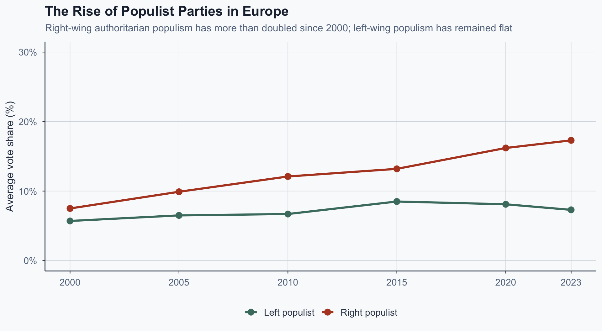
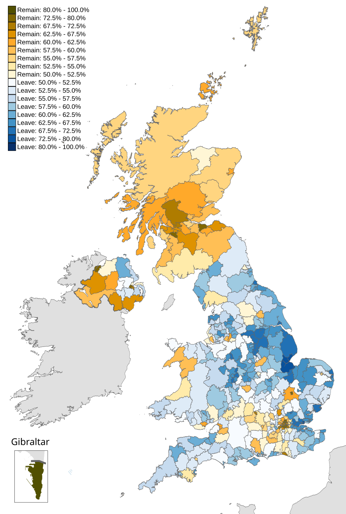
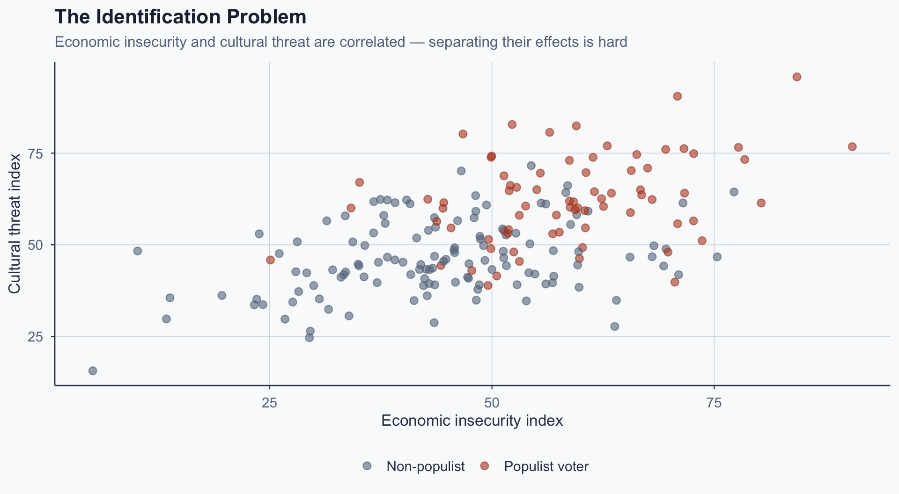
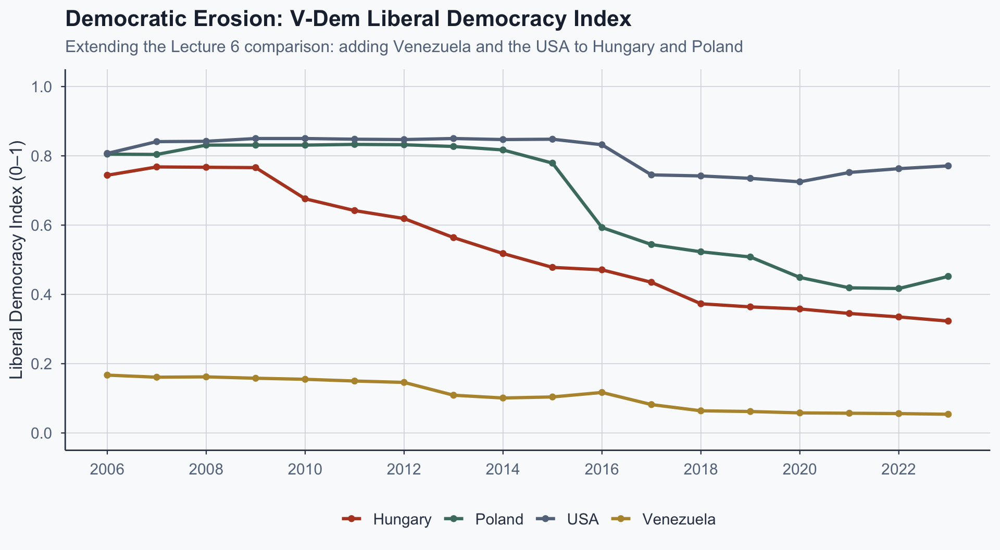
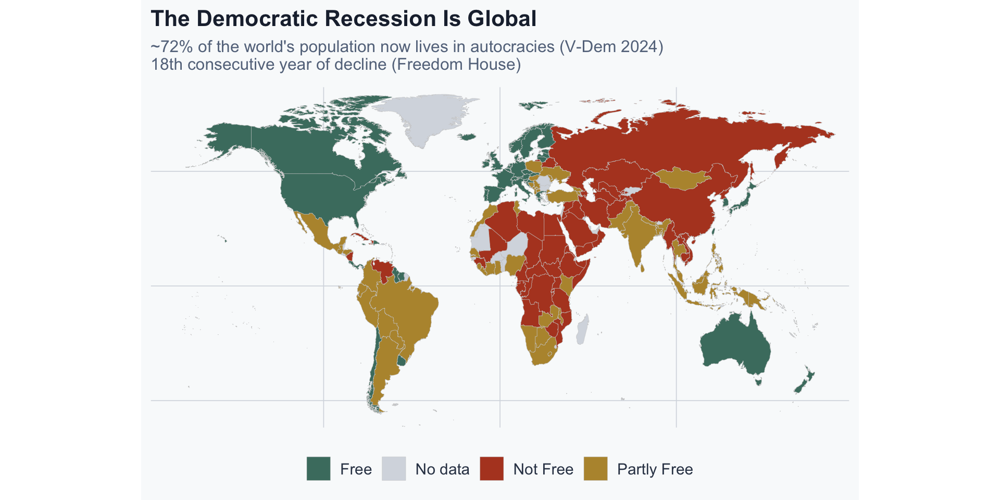

![]()
%%{init: {'theme': 'base', 'themeVariables': {'fontSize': '20px', 'primaryColor': '#4a7c6f', 'primaryTextColor': '#1e293b', 'lineColor': '#334155', 'primaryBorderColor': '#334155'}, 'flowchart': {'useMaxWidth': true, 'nodeSpacing': 50, 'rankSpacing': 70}}}%%
flowchart LR
A["<b>Competitive<br/>Authoritarianism</b><br/><i>Regime type</i><br/>Never fully democratic"] --- C["<b>Both involve<br/>elections +<br/>unfair competition</b>"]
B["<b>Democratic<br/>Backsliding</b><br/><i>Process</i><br/>Was democratic,<br/>now eroding"] --- C
C --> D["<b>But the starting<br/>point differs</b>"]
style A fill:#fbe9e7,stroke:#b44527,stroke-width:2px
style B fill:#e8f5e9,stroke:#4a7c6f,stroke-width:2px
style C fill:#f9fafb,stroke:#334155,stroke-width:2px
style D fill:#fff3e0,stroke:#b7943a,stroke-width:2px
Comparative Politics
Lecture 14: Competition, Populism, and Democratic Erosion
I. Two Different Problems
The Central Claim
- Greatest threat: elected leaders dismantling constraints
- Bridges democracy module with institutions module
- How do democracies erode from within?
Two Phenomena, Often Confused
- Competitive authoritarianism (Levitsky & Way, 2010): a regime type
- Elections are real but the playing field is tilted
- These regimes were never fully democratic
- Democratic backsliding: a process
- Consolidated democracies erode incrementally
- No clean rupture — legal, step-by-step decline
- Conflating these is the most common error in casual commentary
Regime Type vs. Process
Building on Lecture 6
From Lecture 6 we know:
- Democratic backsliding is incremental, not sudden (Bermeo 2016)
- Executive aggrandizement = modal form (Scheppele 2022)
- Each step defensible; cumulative effect devastating
- This lecture: what logic drives it?
Cases at a Glance
- Competitive authoritarianism: Russia under Putin, Singapore, Cambodia
- Elections exist but were never free and fair
- Democratic backsliding: Hungary, Poland, Turkey, Venezuela
- Democracies that eroded after consolidation
- Promissory coups: Thailand (2014), Egypt (2013), Myanmar (2021)
- Military seizure with “restoration” rhetoric
- Most dangerous today: backsliding — hardest to detect
The Question for This Lecture
- Not asking: why do regimes hold fake elections?
- We are asking: Why do some democracies dismantle themselves?
- What political logic makes this possible?
- That logic is populism
Exercise 1
Economic or Cultural? (5 min)
Consider two voters who both supported a populist party in 2019:
- Voter A: A 55-year-old former steelworker in Northern England. His factory closed in 2008. He voted Remain-Labour all his life, then switched to Vote Leave and the Brexit Party. His income fell 30% over a decade.
- Voter B: A 60-year-old retired dentist in rural Bavaria. Comfortable pension, owns her home. She began supporting the AfD after the 2015 refugee crisis. Her economic situation did not change.
For each voter, which channel — economic or cultural — better explains their populist turn? What observable evidence would confirm your answer? Could both channels operate simultaneously in one person?
II. What Is Populism?
Not a Policy — A Logic
Mudde & Kaltwasser (2017): Populism is a thin ideology.
- Society divided into two homogeneous, antagonistic groups
- “The pure people” vs. “the corrupt elite”
- Politics should express the volonté générale of the people
- A claim about legitimate authority, not policy
- Compatible with left and right
Left and Right Populism
- Left populism: people = dispossessed; elite = oligarchy
- Chávez, Morales, Podemos, AMLO
- Right populism: people = native majority; elite = cosmopolitans
- Orbán, Trump, Le Pen, Salvini
- Same structure, different content
- Thin ideology attaches to thicker host ideologies
Populism vs. Pluralism
The real contrast is not left/right but populism vs. pluralism:
| Populism | Pluralism | |
|---|---|---|
| Society | One people, one will | Multiple legitimate interests |
| Opposition | Enemies of the people | Legitimate competitors |
| Institutions | Obstacles if they constrain | Necessary checks on power |
| Compromise | Betrayal | Essential to governance |
| Mandate | Absolute — elections settle everything | Partial — rights constrain majorities |
Why Populism Is Not Just “Angry Voters”
- Economic grievance ≠ populism
- You can be economically frustrated and still accept pluralism
- Populism = political logic attaching to many grievances
- What makes it distinctive: the rejection of institutional constraints
- Courts, central banks, media → not “checks” but “elite capture”
The Elective Affinity with Erosion
- If “the people” have one true will…
- And you claim to represent that will…
- Then any institution that blocks you is illegitimate by definition
- Courts → “activist judges blocking the people’s will”
- Media → “fake news serving elite interests”
- Electoral commissions → “deep state undermining democracy”
- Constraining the executive becomes the anti-democratic act
Populist Logic → Erosion Feedback Cycle
%%{init: {'theme': 'base', 'themeVariables': {'fontSize': '18px', 'primaryColor': '#4a7c6f', 'primaryTextColor': '#1e293b', 'lineColor': '#334155', 'primaryBorderColor': '#334155'}, 'flowchart': {'useMaxWidth': true, 'nodeSpacing': 40, 'rankSpacing': 55}}}%%
flowchart LR
A["<b>Electoral victory</b><br/>claimed as<br/>the people's mandate"] --> B["<b>Institutions framed</b><br/>as elite obstacles"]
B --> C["<b>Constraints weakened</b><br/>courts packed, media<br/>pressured, rules changed"]
C --> D["<b>Opposition disadvantaged</b><br/>playing field tilted"]
D --> E["<b>Next victory larger</b><br/>mandate 'confirmed'"]
E --> A
style A fill:#e8f5e9,stroke:#4a7c6f,stroke-width:2px
style B fill:#fff3e0,stroke:#b7943a,stroke-width:2px
style C fill:#fbe9e7,stroke:#b44527,stroke-width:2px
style D fill:#fbe9e7,stroke:#b44527,stroke-width:2px
style E fill:#e8f5e9,stroke:#4a7c6f,stroke-width:2px
The Populist Redefinition of Institutions
- Pluralism: checks protect everyone, including minorities
- Populism: checks protect elites from the people
- Same institutions, opposite interpretations
- Legitimacy only from popular mandate
- Judicial independence, press freedom → suspect
- “I am finally making democracy real”
- Populism and erosion: logically connected
III. Why Now?
The Populist Wave
- Populist surge across democracies in the 2010s
- Not one region, ideology, or grievance
- Europe, Latin America, Asia, the US
- Why did this happen when it did?
- Four explanations compete; none has won
Populist Vote Share in Europe

Figure 1: Mean populist party vote share across European democracies. Source: Timbro Authoritarian Populism Index (2024).
Four Competing Explanations
| Explanation | Mechanism | Key prediction |
|---|---|---|
| Economic insecurity | Globalization losers, deindustrialization, 2008 crisis | Populist support concentrated among economically displaced |
| Cultural backlash | Status threat from immigration, value change, secularism | Strongest among older, culturally traditional voters |
| Elite failure | Party convergence, cartelization, no meaningful choice | Strongest where mainstream parties most similar |
| Media ecology | Algorithmic amplification, epistemic fragmentation | Correlates with social media penetration |
A Provisional Thesis
- Dominant debate: economic vs. cultural — but either/or misleads
- Cultural threat does more in wealthy democracies
- Economic dislocation drives it in trade-exposed peripheries
- Mechanism depends on context
- Next two slides test this claim
Trying to Disentangle: Two Key Studies
- Colantone & Stanig (2018): import shock → populist vote
- Economic channel confirmed in periphery
- Mutz (2018): status threat predicts Trump support (panel data)
- Cultural channel confirmed in wealthy democracies
- Not contradictory — different contexts

The Identification Problem

Figure 2: Conceptual illustration: economic and cultural explanations predict overlapping populations.
Why the Cause Matters for Policy
- If economic → redistribute and the populist wave recedes
- If cultural → redistribution alone will not suffice
- Both channels real, but dominate in different contexts
- Deindustrialized Europe: trade shocks do causal work
- Wealthy democracies: status threat matters more
- No single policy lever — that is the finding
- Wrong cause → wrong policy
Exercise 2
The Falsifiability Challenge (5 min)
Pick the explanation you find most compelling:
- Economic insecurity
- Cultural backlash
- Elite failure
- Media ecology
Now: What observable implication would distinguish your explanation from the others? What evidence would definitively falsify it?
This is where the course’s methodological commitments have real bite.
IV. Populism and Institutional Erosion
Ginsburg & Huq: Constitutional Retrogression
Ginsburg & Huq (2018): three pillars of liberal democracy under attack:
- Competitive elections — gerrymandering, media capture, electoral rule changes
- Liberal rights — press freedom curtailed, civil society squeezed, minority rights eroded
- Rule of law — court packing, prosecutorial independence eliminated, constitutional amendments
- Retrogression = systematic degradation across all three
- Each step is individually small and legal
Three Pillars Under Attack
%%{init: {'theme': 'base', 'themeVariables': {'fontSize': '18px', 'primaryColor': '#4a7c6f', 'primaryTextColor': '#1e293b', 'lineColor': '#334155', 'primaryBorderColor': '#334155'}, 'flowchart': {'useMaxWidth': true, 'nodeSpacing': 40, 'rankSpacing': 55}}}%%
flowchart TD
A["<b>Liberal Democracy</b>"] --> B["<b>Competitive<br/>Elections</b>"]
A --> C["<b>Liberal<br/>Rights</b>"]
A --> D["<b>Rule of<br/>Law</b>"]
B --> B1["Gerrymandering"]
B --> B2["Media capture"]
B --> B3["Electoral rule changes"]
C --> C1["Press freedom curtailed"]
C --> C2["Civil society squeezed"]
C --> C3["Minority rights eroded"]
D --> D1["Court packing"]
D --> D2["Prosecutors politicized"]
D --> D3["Constitutional rewrites"]
style A fill:#e8f5e9,stroke:#4a7c6f,stroke-width:3px
style B fill:#fff3e0,stroke:#b7943a,stroke-width:2px
style C fill:#fff3e0,stroke:#b7943a,stroke-width:2px
style D fill:#fff3e0,stroke:#b7943a,stroke-width:2px
style B1 fill:#fbe9e7,stroke:#b44527,stroke-width:1px
style B2 fill:#fbe9e7,stroke:#b44527,stroke-width:1px
style B3 fill:#fbe9e7,stroke:#b44527,stroke-width:1px
style C1 fill:#fbe9e7,stroke:#b44527,stroke-width:1px
style C2 fill:#fbe9e7,stroke:#b44527,stroke-width:1px
style C3 fill:#fbe9e7,stroke:#b44527,stroke-width:1px
style D1 fill:#fbe9e7,stroke:#b44527,stroke-width:1px
style D2 fill:#fbe9e7,stroke:#b44527,stroke-width:1px
style D3 fill:#fbe9e7,stroke:#b44527,stroke-width:1px
Applying the Framework: Hungary
Mapping Lecture 6 (Scheppele) to Ginsburg & Huq:
- Elections: rules redrawn (2014); media captured
- Rights: NGO law (2017); CEU forced out
- Rule of law: court packed (2012–13); new constitution
- All three pillars degraded — textbook retrogression

V-Dem Liberal Democracy Index

Figure 3: V-Dem Liberal Democracy Index (v2x_libdem, 0–1). Source: V-Dem Institute, Dataset v14.
Case: Venezuela Under Chávez
- 1998: Chávez elected in a real democracy
- 1999–2004: New constitution, court packed (20 → 32)
- Media pressured; oil-funded patronage → dominance
- By 2010: competitive authoritarianism
Venezuela: The Oil-Fueled Variant
- Resource rents → no tax-based accountability
- Patronage replaced party competition
- Opposition boycotted 2005 elections → legitimacy gift
- Under Maduro: full authoritarian consolidation
- Same logic as Hungary + resource-curse dynamics
- Populist erosion not confined to one ideology
Case: Mexico Under AMLO
- 2018: AMLO wins with 53%; Morena supermajority 2024
- Elections: INE budget cut, board politicized
- Rights: military in civilian roles; press pressured
- Rule of law: 2024 reform → popular election of judges
- INAI (transparency body) left non-functional
- Framed as “returning power to the people”
Comparing the Cases
| Hungary | Venezuela | Mexico | |
|---|---|---|---|
| Starting point | EU democracy | Petrostate democracy | Post-transition democracy |
| Populist type | Right | Left | Left |
| Key mechanism | Constitutional rewrite | Court packing + oil | Popular election of judges |
| Speed | Fast (2 years) | Gradual (10 years) | In progress |
| Current status | Competitive auth. | Full authoritarian | Contested |
Mexico’s novelty: Hungary/Venezuela packed courts. Mexico mandates popular election of judges — redefining independence as accountability. No prior case attempted this.
Exercise 3
Applying the Framework (7 min)
Using Ginsburg & Huq’s three pillars, evaluate Mexico under AMLO/Morena:
- Competitive elections: What changed? What was threatened?
- Liberal rights: Which rights or freedoms were affected?
- Rule of law: What happened to judicial independence?
Is this retrogression, democratic deepening, or something else? What evidence would you need to decide?
V. Cause or Symptom?
Cause or Symptom? Why It Matters
- Populism: cause or symptom of erosion?
- Epiphenomenal: fix delivery → populism recedes
- Causal: populist logic is itself a mechanism
- If symptom → policy reform suffices
- If causal → constitutional design matters directly
- Different prescriptions; getting it wrong is costly
The Evidence — and What Sharpens It
- Hungary: institutions worked before Fidesz → causal
- Venezuela: institutions weak before Chávez → epiphenomenal
- Two cases alone don’t settle it
- Poland breaks the tie — next slide
Poland as Natural Experiment
- Before (2015–2023): PiS packed courts, captured media
- V-Dem LDI: 0.83 → 0.42
- After (2023–): Tusk coalition won
- Same economy, demographics, EU membership
- What changed? Only the government
- Judicial independence, media pluralism being restored
- If erosion = structural → government change can’t reverse
- But it did → populist logic is causally independent
- Closest thing to a natural experiment on populism
The Democratic Recession in Numbers

Figure 4: Approximate global freedom status. Source: Simplified classification based on Freedom House (2024).
Conclusion
- Competitive authoritarianism ≠ democratic backsliding
- Populism = thin ideology rejecting institutional constraints
- Cultural threat dominates in wealthy democracies; economic dislocation in peripheries
- Ginsburg & Huq: erosion attacks elections, rights, rule of law
- Poland’s reversal → populist logic is causally independent
- Mexico’s judicial reform → a genuinely novel erosion form
Closing Question
If populism is a logic that redefines institutional checks as elite capture, and if this logic is compatible with winning democratic elections — what institutional design, if any, can protect democracy from its own voters?
References
- Bermeo, N. (2016). On democratic backsliding. Journal of Democracy, 27(1), 5–19.
- Colantone, I. & Stanig, P. (2018). The trade origins of economic nationalism: Import competition and voting behavior in Western Europe. American Journal of Political Science, 62(4), 936–953.
- Ginsburg, T. & Huq, A.Z. (2018). How to Save a Constitutional Democracy. Chicago: University of Chicago Press.
- Inglehart, R. & Norris, P. (2016). Trump, Brexit, and the rise of populism: Economic have-nots and cultural backlash. HKS Working Paper No. RWP16-026.
- Levitsky, S. & Way, L.A. (2010). Competitive Authoritarianism: Hybrid Regimes After the Cold War. Cambridge: Cambridge University Press.
- Mudde, C. & Kaltwasser, C.R. (2017). Populism: A Very Short Introduction. Oxford: Oxford University Press.
- Mutz, D.C. (2018). Status threat, not economic hardship, explains the 2016 presidential vote. Proceedings of the National Academy of Sciences, 115(19), E4330–E4339.
- Scheppele, K.L. (2018). Autocratic legalism. University of Chicago Law Review, 85(2), 545–583.
Popescu (JCU) Comparative Politics Lecture 14: Competition, Populism, and Democratic Erosion